
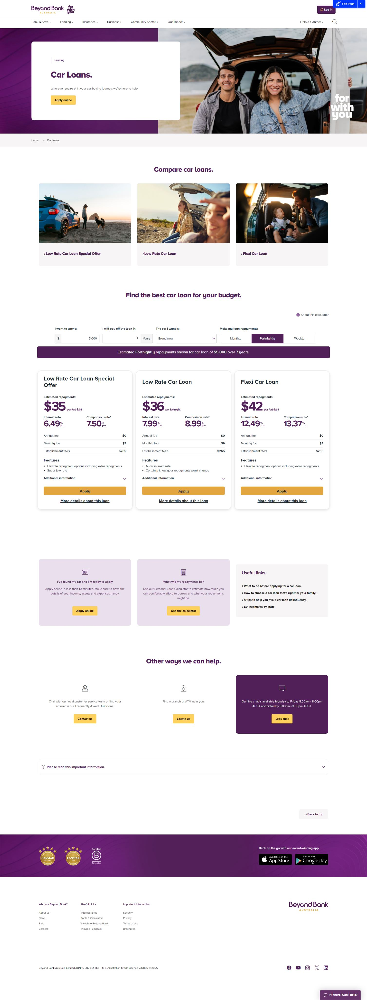

Beyond Bank Car Loans Redesign
A data led redesign of the Beyond Bank car loans page that lifted traffic and engagement by 3%.
Project overview
- Project type
- Page redesign on a live banking website
- Role
- Digital Analyst (UX/UI)
- Industry
- Financial services
- Tools
- GA4, Miro, UserTesting
- Duration
- Oct 2025 to Apr 2026, Melbourne
Key summary
At Beyond Bank Australia I worked in agile, cross functional product squads alongside Product, Engineering and Marketing, using GA4 data to recommend UX and UI improvements across the bank’s website. The car loans page was one of the clearest opportunities. On the old page, you had to click into each loan one at a time to find out anything about it, and there was nothing at all on the page about the terms you needed to qualify. I redesigned it around three cards that give you the vital information for every loan at once, so you can decide straight away which one is right for you. The redesign lifted traffic and engagement on the page by 3%.
UX Research
Overview
My role was to carry out data led UX and content analysis across the website, covering car loans, current and savings accounts and the community pages, and to recommend UI and UX improvements that would make them clearer, more engaging and better at converting. The car loans page stood out as a page where the information people needed to make a decision was there, but hidden.
Research Goals
I wanted to understand how people were using the old car loans page, where they were losing interest, and what was stopping them from quickly choosing the right loan.
GA4 Analysis
I started with the GA4 data for the old car loans page, looking at how people arrived, how they moved through the page and where they left.
Reviewing the Old Page
Alongside the data, I reviewed the old car loans page myself, and two problems stood out.
One click per loan
To read anything more about a loan, you had to click a separate button for each one, individually.
No qualifying terms
There was no information whatsoever on the page about the terms and conditions you needed to meet to qualify for each loan.
A slow decision
Choosing between loans meant opening each one in turn and trying to remember the details, rather than seeing them side by side.
The numbers on the screenshot match the three problems above.

Journey Mapping
Working within the squad, I used Miro for journey mapping and workshops with Product, Engineering and Marketing, mapping how someone moves from thinking about a new car to choosing and applying for a loan, and using it to prioritise what went into the backlog.
Stage 1
Lands on the car loans page
On the old page
Three photo tiles that each link away to a separate page
In the redesign
Three loan cards straight away
Stage 2
Compares the loans
On the old page
One click per loan, one at a time
In the redesign
All three cards side by side
Stage 3
Checks they qualify
On the old page
No qualifying terms anywhere on the page
In the redesign
Car age leads every card
Stage 4
Works out repayments
On the old page
A calculator further down the page
In the redesign
The calculator kept, because testers loved it
Stage 5
Understands the terms
On the old page
Banking terms like comparison rate, with no plain explanation
In the redesign
Plain language, plus the glossary idea from testing
Stage 6
Applies
On the old page
Opening each loan in turn before deciding
In the redesign
Apply once they have chosen
Scroll sideways through the journey.
UX Design
Project Goals
- Show the vital information for every loan at once
- Make the qualifying terms clear before anyone clicks
- Help people decide which loan is right for them straight away
- Stay within Beyond Bank’s existing design system
Three Loan Cards
I designed three cards, one for each car loan, that tell you the vital information up front, so you can compare them and decide immediately. Each card leads with the qualifying condition that matters most, the age of the car, then shows the interest and comparison rates, a one line summary of what the loan is best for, the key features like how much you can borrow, and a link to learn more.
Our lowest fixed rate special offer
- How much you can borrow
- Repayment flexibility
Our low fixed rate offer
- How much you can borrow
- Repayment flexibility
A car loan with maximum flexibility
- Approval in advance
- Member discounts
An illustration of the card structure, using the rates from my design file. Rates change, so see the live page for current figures.
The Other Important Information
Beneath the cards, I brought the rest of the information people need to make a decision onto the same page, so nobody has to go looking for it.
- Our car loan benefitsBorrowing limits, repayment frequency, redraw, fixed rates, extra repayments and online repayments.
- Calculate your repaymentsA repayment calculator right on the page.
- Don’t forget car insuranceA prompt to think about insurance at the right moment.
- Car loan FAQsAnswers to the most common questions.
- More help with your next carGuides and articles about buying a car.
- Help is hereLive chat, phone and branch details.
Working Within the Design System
Beyond Bank has an established design system, so rather than inventing new components I applied its existing components and patterns across the redesigned journey. That kept the page visually and functionally consistent with the rest of the site, and made it easier for Engineering to build.
Usability Testing
Testing With UserTesting
We used UserTesting (usertesting.com) for our usability tests. I designed and moderated sessions for the home loans journey across diverse user groups, and the findings fed directly into design decisions.
The clearest finding was that first time buyers rely on calculators and clear terminology. The same thinking runs through the car loans page: key terms up front, plain language, and a repayment calculator right on the page.
What worked
Users loved the repayment calculator in the home loans section
Needs improving
They wanted language that was easy to understand
Ideas
Keep the calculator on the new car loans page
A glossary of terms to reference
Outcome
I presented my recommendations to stakeholders across Product, Engineering and Marketing to reach cross functional sign off before the redesign went live.
Other Work at Beyond Bank
The car loans page was one part of a wider role improving key banking journeys.
Salary packaging redesign
I drove the redesign of salary packaging, running user research and journey mapping, and streamlining the forms and workflows to reduce friction for both customers and staff.
Home loans
Designed and moderated usability testing on UserTesting, which showed that first time buyers rely on calculators and clear terminology.
Journeys across the bank
I optimised end to end journeys and user flows across desktop and mobile for home loans, car loans, credit products and online banking features.
Key Takeaways
Challenge
The challenge was improving a page inside a large, regulated bank. I had to work within an established design system, keep every detail accurate, and bring Product, Engineering and Marketing with me, so every recommendation needed data behind it before it could get sign off.
Lessons Learned
Let the data point the way
GA4 showed where the page was falling short, which made the case for change much easier to make.
Put the decision on the page
If people need information to choose, it should be in front of them, not behind a button for each option.
Test with real people
UserTesting showed how much first time buyers lean on calculators and plain language, which is easy to underestimate.
Thanks for watching.
If you would like to talk about a role, a project or even a film, I would love to hear from you.